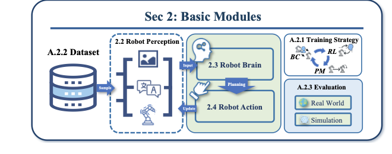
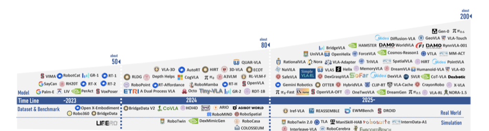
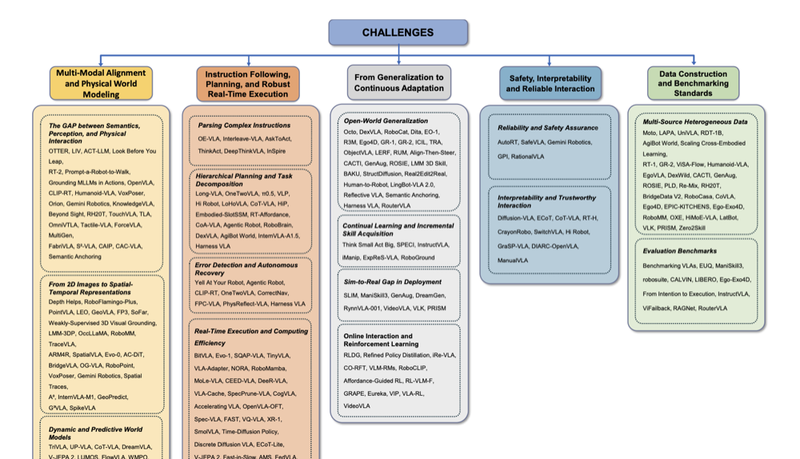

Fragmented Knowledge
模块、模型、技术里程碑与开放问题彼此割裂，领域缺少能够解释发展逻辑的系统认知框架。
VLA RESEARCH / 研究主题 01
From Modules to Milestones and Challenges
THE CENTRAL QUESTION
现有 VLA 综述通常围绕模型架构、训练范式或应用场景进行分类汇总，却缺少能够贯通系统能力构成、 技术范式演进与核心挑战形成机制的统一解释框架。本工作试图回答：VLA 的关键能力从何而来， 不同技术路线为何演化，以及哪些能力边界真正决定其迈向通用具身智能的下一步。
模块、模型、技术里程碑与开放问题彼此割裂，领域缺少能够解释发展逻辑的系统认知框架。
将分散的技术路线组织为从基础能力、范式演进到前沿挑战识别的一条完整逻辑链。
以五个战略维度刻画 VLA 的技术边界，为下一代通用具身智能建立结构化研究路线图。
UNIFIED FRAMEWORK / 002
分类充分，但解释链条仍然断裂。



从领域知识组织，走向可被持续验证和扩展的研究路线。
MODULES
Survey 从任何 VLA 系统共享的能力构成出发，以功能而非单一架构划分 Perception、Brain 与 Action， 并将数据、训练和评测视为支撑整个能力闭环的基础设施。
将视觉、语言、触觉与状态信息编码为任务相关表征。
融合多模态信息，完成推理、规划与动作生成。
将意图解码为离散、连续或混合形式的机器人控制。
MILESTONES
论文沿着模型、数据集和评测基准的共同演进重建 VLA 时间线。当前版本覆盖至 2025，2026 年的新工作正在持续整理中。
视觉、语言与机器人控制开始被统一到可扩展的策略学习框架中。
更大规模的预训练、跨任务数据与生成式动作建模推动能力扩展。
研究重心逐渐转向跨具身泛化、世界建模、复杂规划与可靠部署。
新模型、数据集、基准与技术范式将在下一版本中系统接入。
LIVE UPDATECHALLENGES
这五个战略维度不是附加在综述末尾的问题清单，而是用于解释 VLA 下一阶段演化方向的核心研究坐标系。
连接语义、空间结构、动力学与真实物理交互。
关联工作 / 待持续更新从开放指令理解走向长时规划、错误恢复与高效控制。
关联工作 / 待持续更新跨任务、环境与具身迁移，并在部署中不断获得新能力。
关联工作 / 待持续更新让机器人决策可验证、行为可预测，并支持人类有效干预。
关联工作 / 待持续更新统一异构数据，并以更具深度和广度的标准衡量真实能力。
关联工作 / 待持续更新共同一作
FOUNDING THE FRAMEWORKMY CONTRIBUTION
作为共同一作，我共同主导了 Survey 的概念框架与知识架构设计，将快速扩张、彼此分散的 VLA 文献， 重构为 Modules–Milestones–Challenges 的统一分析体系。
这项工作不仅完成领域信息的系统归纳，更进一步提炼 VLA 技术演进背后的能力逻辑、关键瓶颈与未来突破路径， 为研究者提供一套可以持续扩展的具身智能知识地图。
LIVE KNOWLEDGE BASE / CONTINUOUSLY UPDATED
VLA 仍在快速演进，因此这项工作被设计为一个持续生长的研究资源。论文提供稳定的核心框架， Living Survey 网站则不断接入新的模型、数据集、评测基准与前沿问题。2026 年更新正在进行中。
Visit the Living Survey ↗ OPEN MANUSCRIPT ↗
OPEN MANUSCRIPT ↗
MANUSCRIPT / LIVING SURVEY